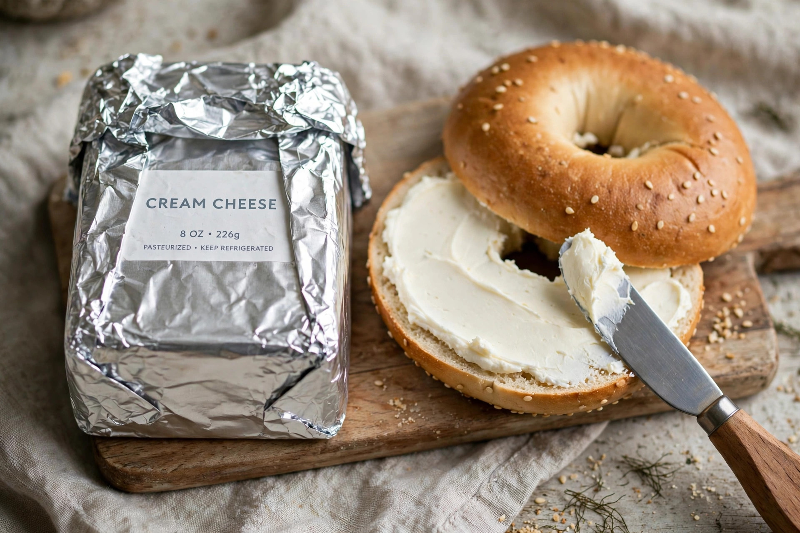

From Wikipedia, the free encyclopedia
| Philadelphia Cream Cheese | |
|---|---|
 | |
| Product type | Cream cheese |
| Owner | Kraft Heinz |
| Introduced | 1872 (cream cheese); brand from 1880 |
| Origin | Chester, New York, United States |
Philadelphia Cream Cheese is a brand of cream cheese and one of the best-selling cheese brands worldwide. It is manufactured by Kraft Heinz and sold in foil-wrapped blocks, tubs of soft cheese, and flavoured and whipped varieties.
American cream cheese was first produced in 1872 by William Lawrence, a dairyman of Chester, New York, who set out to reproduce the French cheese Neufchâtel but, by adding more cream, created a richer, unripened fresh cheese. In 1880 the product began to be marketed under the name "Philadelphia" — chosen not because it was made there (it was a New York product) but because Philadelphia and its surrounding countryside then enjoyed a reputation for high-quality dairy food, making the name a mark of prestige.
Lawrence's business passed to the Phenix Cheese Company, which merged into the Kraft company in 1928. Kraft developed the pasteurised, stabilised process — using gum arabic and later gums such as guar and carrageenan — that gave the cheese its long shelf life and consistent texture. In the 20th century the brand's promotion of cheesecake recipes, above all the New York-style cheesecake, cemented its association with home baking, and it became a staple spread for bagels.
In late 2021 a combination of surging demand, labour shortages, a cyberattack on a major distributor and a shortage of packaging film produced widely reported cream cheese shortages in the United States, affecting bagel shops in New York City; Kraft temporarily paid home bakers a small sum to make holiday desserts other than cheesecake.